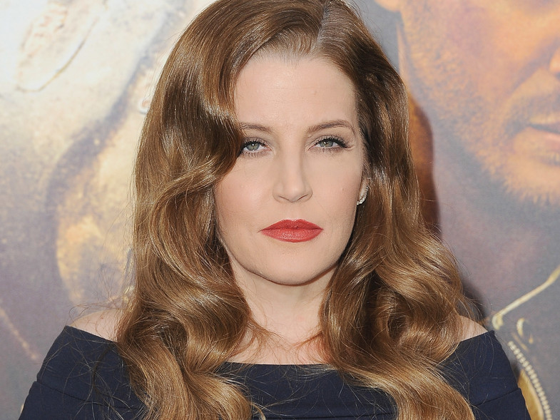

Michael Jackson
Nación por Nación, todo el mundo debe unirse para hacer frente a los problemas que veamos. Quizás entonces podamos resolverlos de alguna manera. Le pedí un favor a mi vecina. Me dijo "más tarde" ¿Que le ha pasado a la gente? ¿Hemos perdido el amor, o que?. Tengo que encontrar mi paz interior porque nadie me deja tranquilo. Falsos profetas lloran los desastres. ¿Qué posibilidades hay? Le dije a mi hermano "habrá problemas”, “tiempos y lágrimas por miedo". Pero tenemos que vivir cada día como si fuera el último.
Historia
Nacido el 29 de agosto de 1958 en Gary, Indiana (Estados Unidos), Michael Joseph Jackson era el séptimo de los nueve hijos de Joseph y Katherine Jackson. Comenzó su carrera siendo sólo un niño de 11 años junto a sus hermanos en los Jackson Five, con quienes lanzó temas de éxito como I Want You Back o ABC. Sin embargo, ya a la edad de cinco años había mostrado un increíble talento para la canción en una función navideña del colegio. La presión de las ventas, la fama, las disputas con sus hermanos, compañeros de viaje en los Jackson Five, todo formó parte indisoluble de una niñez que culminó cuando a los doce años ya era considerado toda una estrella mundial. Como dato anecdótico de lo que fueron los Jackson Five, y luego él en solitario, algunas cifras de ventas escalofriantes que ya quisieran para sí muchos músicos consagrados: los cinco hermanos Jackson vendieron, mientras actuaron juntos bajo el patrocinio de Diana Ross, más de cien millones de copias.
La fama mundial le llegó con su carrera como solista, que inició en 1979 con el disco Off The Wall, que incluía éxitos como Don't Stop 'Til You Get Enough y Rock With You. Su segundo álbum, Thriller, de 1982, es el disco más vendido de la historia.

Canciones mas escuchadas
- Billie Jean (album Thriller 1982)
- Beat it (album Thriller 1982)
- Thirller (album Thriller 1982)
- Black Or White (album Thriller 1982)
- Remember the time (album Dangerous 1991)
- Smooth Criminal (album Bad 25)
- The way you make me feel (album Bad 25)
- You Rock my World (album invincible 2001)
- Dirty Diana (album Bad 25)
- Earth song (album Thriller 1982)
El rey del pop
MJ
MJ
MJ
Mujeres en la vida de Michael

Lisa M. Presley
primera esposa
Lisa Marie Presley y Michael Jackson estuvieron casados entre 1994 y 1996 y aunque han pasado más de 15 años desde entonces, los detalles de la relación siguen causando revuelo. Es así que la confesión de que ella decidió “intentar salvarlo” volvió a revivir la polémica en torno a la pareja.
Devora Rowe
segunda esposa
Jackson se casó con Debbie Rowe en el hotel Sheraton Park de Sídney, Australia, el 15 de noviembre, cuando él tenía 38 años y ella 37. Fue una boda poco convencional, ambos vistieron de negro, informales. Él selló la unión besándola en la mejilla, ella ya gestaba su embarazo.